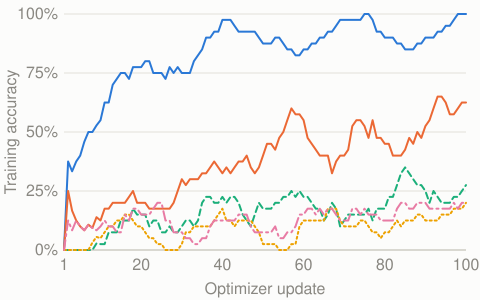
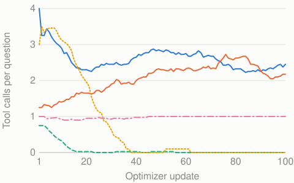

Summary. The agent answers questions about a fictional university with two database tools. With a simple one-line tool format written in the system prompt, test accuracy rises from 55% (11/20) before training to 90% (18/20) after 100 REINFORCE updates, while tool calls per question drop from 3.30 to 2.60 and invalid requests from 1.5% to 0%. Five prompt setups were compared; the tool format had a larger effect than RL itself.
src/database.py), generated with the student ID 2024700147 as the seed: 10 faculty members (F01–F10: name, department, title, office, email), 10 courses (C01–C10: code, credits, semester, instructor_id) and 5 projects (P01–P05: budget, start year, leader_id). The ID links allow multi-hop questions.search(query) scores every record by how many query words (3+ characters) it contains and returns up to 5 matches as ID: name (type). read_record(id) returns the full record as JSON, or an error for an unknown ID.src/questions.py) come from templates over the database and are split with the same seed into 30 training and 20 test questions with reference answers (no overlap). The test set has 12 single-hop questions (e.g. “In which semester is Linear Algebra offered?”) and 8 multi-hop questions (e.g. “Which department does the instructor of Computer Vision belong to?”).The format is described in the system prompt (src/agent_custom.py). Each reply is exactly one line; generation stops at the line break. Tool results come back as a user message starting with RESULT:.
SEARCH: <words> search the database READ: <record id> read the full record ANSWER: <short answer> final answer
The system prompt also holds two worked examples with made-up records (one single-hop, one multi-hop).
SEARCH:, READ: or ANSWER:, the value is empty, or the record ID does not exist. Invalid requests count toward the 4-call limit.ANSWER:; counted as wrong.@ . -).| Before training (base model) | Value |
|---|---|
| Answer accuracy | 55% (11/20): single-hop 8/12, multi-hop 3/8 |
| Average tool calls | 3.30 |
| Invalid tool requests | 1.5% (1/66) |
The base model already follows the format, but 5 of its 9 errors are loops: it repeats the same SEARCH or READ until the four calls run out and never writes ANSWER:.
Each of the 100 optimizer updates (src/train_rl.py):
torch.no_grad() (temperature 1.0);| Setting | Value |
|---|---|
| Trainable parameters | LoRA only: r = 8, α = 16, dropout 0.05 on q/k/v/o_proj (1.08M, 0.22%) |
| Optimizer | AdamW, lr 5e-5, grad. clip 1.0 |
| Episodes / update | 4 |
| Outputs | outputs/exp_custom/train_log.csv, lora_adapter/ |
| Updates (final run) | Reward | Accuracy | Calls | Invalid |
|---|---|---|---|---|
| 1–10 | +0.40 | 55% | 2.90 | 14 |
| 41–50 | +0.73 | 88% | 2.83 | 5 |
| 91–100 | +0.88 | 100% | 2.45 | 0 |


| Test set (20 questions, greedy decoding) | Before | After |
|---|---|---|
| Answer accuracy | 55% (11/20) | 90% (18/20) |
| Single-hop / multi-hop | 8/12 / 3/8 | 12/12 / 6/8 |
| Average tool calls | 3.30 | 2.60 |
| Invalid tool requests | 1.5% (1/66) | 0.0% (0/52) |
| Episodes with no answer | 5 | 0 |
Before training (no answer):
SEARCH: Circuit Analysis
RESULT: C09: Circuit Analysis (course)
P05: Medical Image Analysis (project)
SEARCH: Medical Image Analysis
SEARCH: Circuit Analysis
SEARCH: Medical Image Analysis
(same two results every time)
→ 4 calls used, no ANSWER
After training (3 calls, correct):
SEARCH: Circuit Analysis
RESULT: C09: Circuit Analysis (course) ...
READ: C09
RESULT: {..., "instructor_id": "F10"}
READ: F10
RESULT: {"id": "F10",
"name": "Kerem Erdem", ...}
ANSWER: Kerem Erdem
After training:
SEARCH: Computer Vision
RESULT: C10: Computer Vision (course)
F01: James Jensen (faculty, Computer Science)
F10: Kerem Erdem (faculty, Computer Science)
READ: C10
RESULT: {..., "instructor_id": "F05"}
READ: F01 ← should be F05
RESULT: {"id": "F01", ...,
"department": "Computer Science", ...}
ANSWER: Computer Science
What RL changed. The base model already knew the format but often got stuck: it repeated the same call (as in the successful example) or read only the course record. RL rewards episodes that reach a correct ANSWER:, so the policy learned the full chain SEARCH → READ course/project → READ instructor/leader → ANSWER and to stop as soon as the answer is known. The −0.05 cost per call pushed out the repeated calls (3.30 → 2.60 calls, no loops left), and invalid requests disappeared. 7 test questions were gained and none were lost.
Why the remaining errors happen. Both remaining errors are multi-hop questions where the model reads the wrong second record. In the failed example the search for “Computer Vision” also returns two Computer Science professors (the word “Computer” matches their department), and the model reads F01 from that list instead of the course's instructor_id (F05). The other error is the same: for “Who teaches Quantum Mechanics?” it reads project P04 (Quantum Error Correction), which the search also returned. The policy has learned to read a second record, but not yet to always take its ID from the first record; a stricter search or more multi-hop training questions would likely help.
All runs use the same seed, questions, reward, LoRA and training settings (experiments.md). Two things vary: the tool format (Qwen's native <tool_call>{json}</tool_call> with tools=, where any reply without a tool call is the final answer; or our one-line format) and where the two examples are (none, separate chat turns, or the system prompt).
| Run (format · examples) | Base | Trained | Calls (trained) | Trained model |
|---|---|---|---|---|
| Original · none | 15% | 15% | 1.00 | 1 search, then answers; unchanged |
| Original · chat turns | 15% | 50% | 2.10 | learned to READ; multi-hop 0/8 |
| Original · system prompt | 15% | 20% | 0.00 | stopped using tools, guesses |
| Custom · none | 15% | 20% | 0.00 | stopped using tools, guesses |
| Custom · system prompt (final) | 55% | 90% | 2.60 | full multi-hop chains |
ANSWER:, and free text counted as invalid instead of ending the episode. With Qwen's format the model tends to answer right after the first tool result, which ends the episode early.